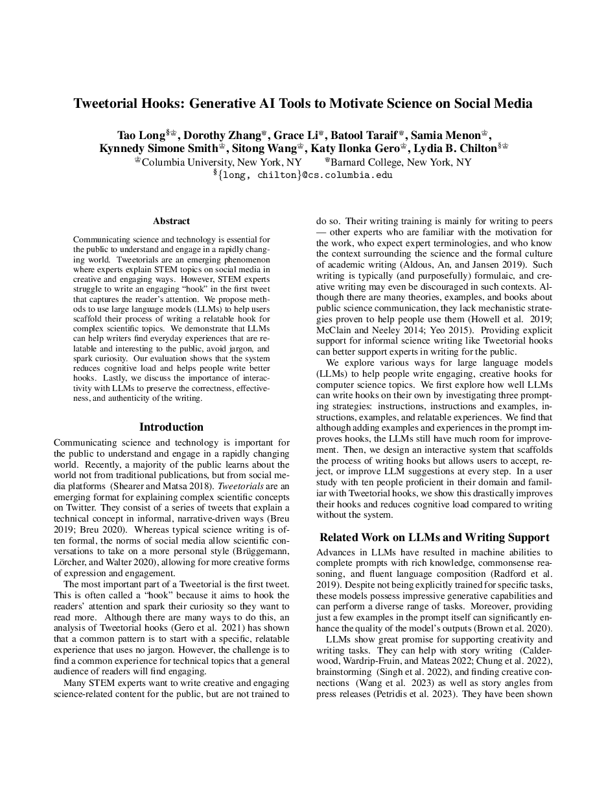
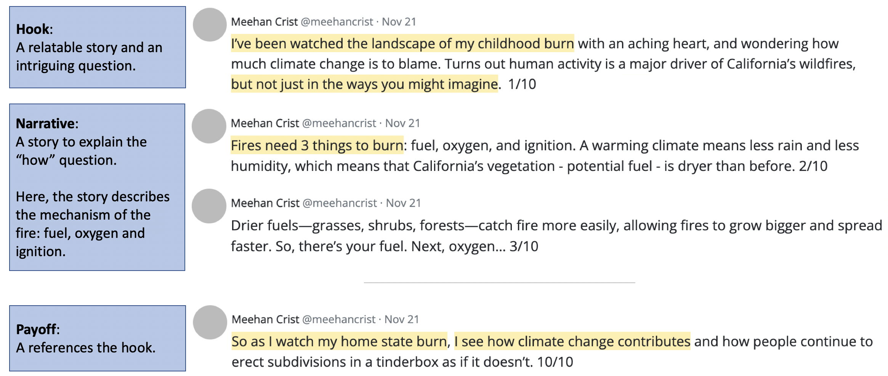
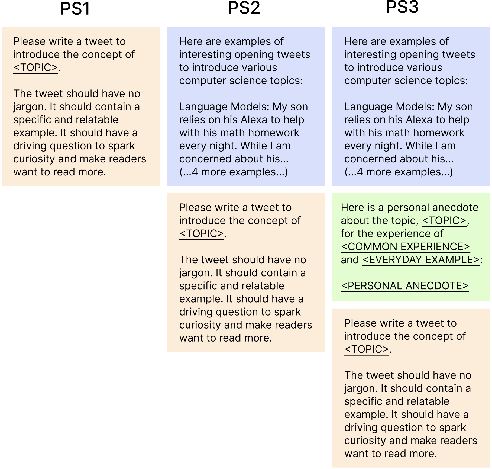
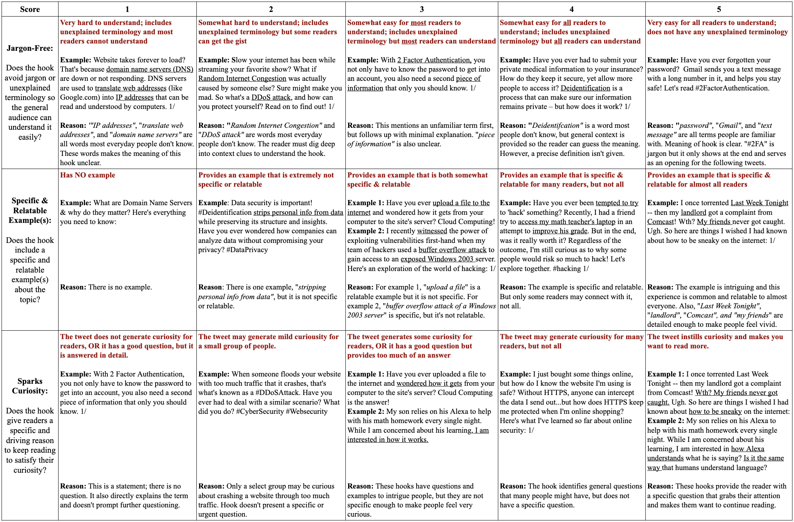
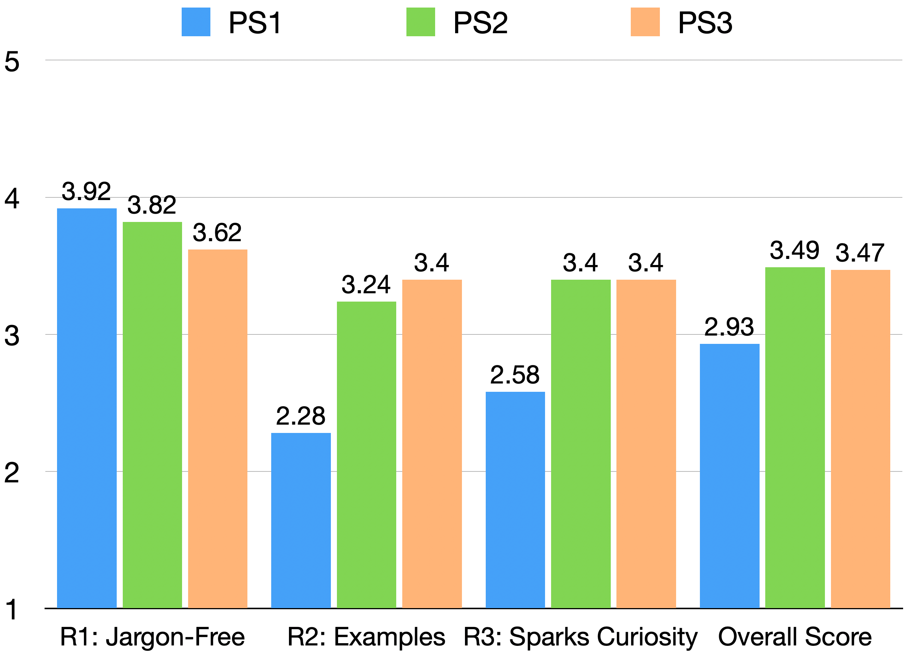
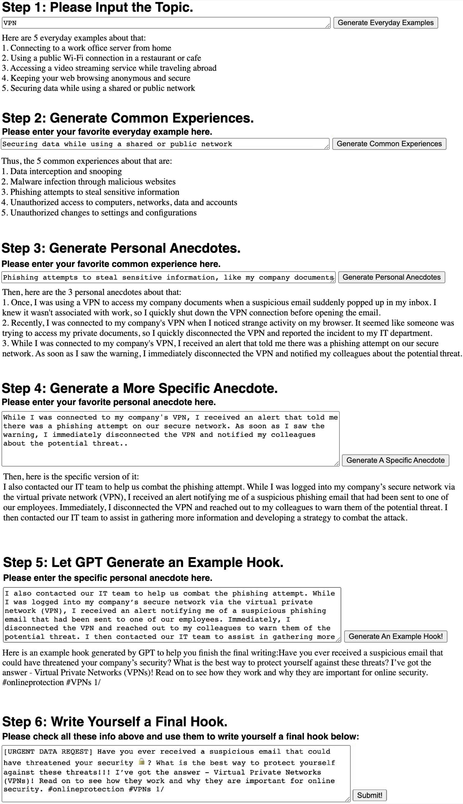
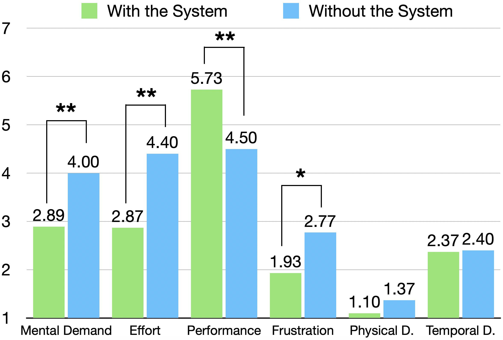

Tweetorial Hooks: Generative AI Toolsto Motivate Science on Social Media
Columbia University
ICCC 2023

STEM experts struggle to write the first tweet that hooks readers.
— HookIncubator uses LLM scaffolding to find relatable everyday experiences.
1/ The Hook Problem
Tweetorials are threads in which experts explain STEM topics on social media. The first tweet, the hook, decides whether anyone keeps reading, and it is the hardest part to write.

Summary
Experts know the science but often lack a feel for what is relatable to a general audience. LLMs can help find everyday experiences that connect to technical topics.
2/ Study 1: Prompting Strategies
Before building a tool, we asked how well an LLM can write hooks on its own and which prompting strategy works best.



Summary
Examples teach the model the style of a good hook. But LLM output alone stays uneven, so user interaction remains essential.
3/ HookIncubator: User Study & Discussion
Study 2 turned the scaffolding into a tool, the Tweetorial Hook Incubator, and tested it with ten writers who wrote hooks with and without it.


Summary
Scaffolding the writing process, rather than replacing the writer, reduces cognitive load and helps people write better hooks while keeping the writing correct, effective, and authentic.
BibTeX
If this work is useful to you, here is a citation you can copy.
@inproceedings{long2023tweetorial,
author = {Long, Tao and Zhang, Dorothy and Li, Grace and Taraif, Batool and Menon, Samia and Smith, Kynnedy Simone and Wang, Sitong and Gero, Katy Ilonka and Chilton, Lydia B.},
title = {Tweetorial Hooks: Generative AI Tools to Motivate Science on Social Media},
booktitle = {Proceedings of the 14th International Conference on Computational Creativity},
editor = {Pease, Alison and Cunha, Jo{\~a}o Miguel and Ackerman, Maya and Brown, Daniel G.},
pages = {44--53},
year = {2023},
publisher = {Association for Computational Creativity},
location = {Waterloo, Ontario, Canada},
series = {ICCC '23},
url = {https://computationalcreativity.net/iccc23/papers/ICCC-2023_paper_53.pdf},
eprint = {2305.12265},
archivePrefix = {arXiv}
}